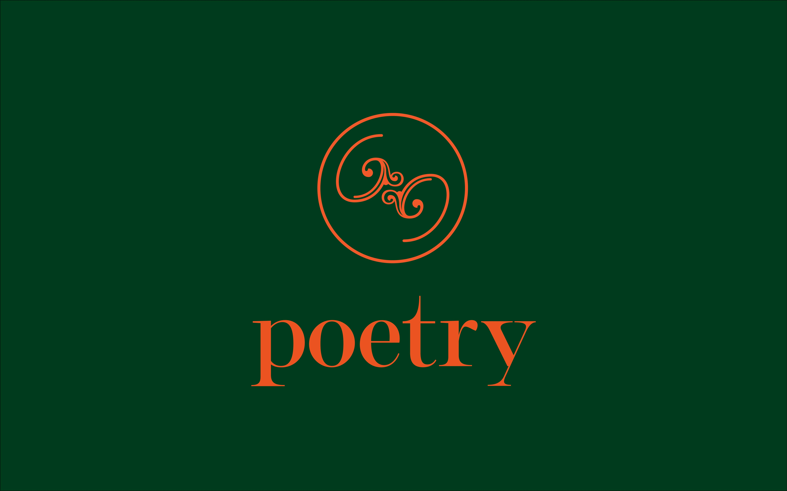
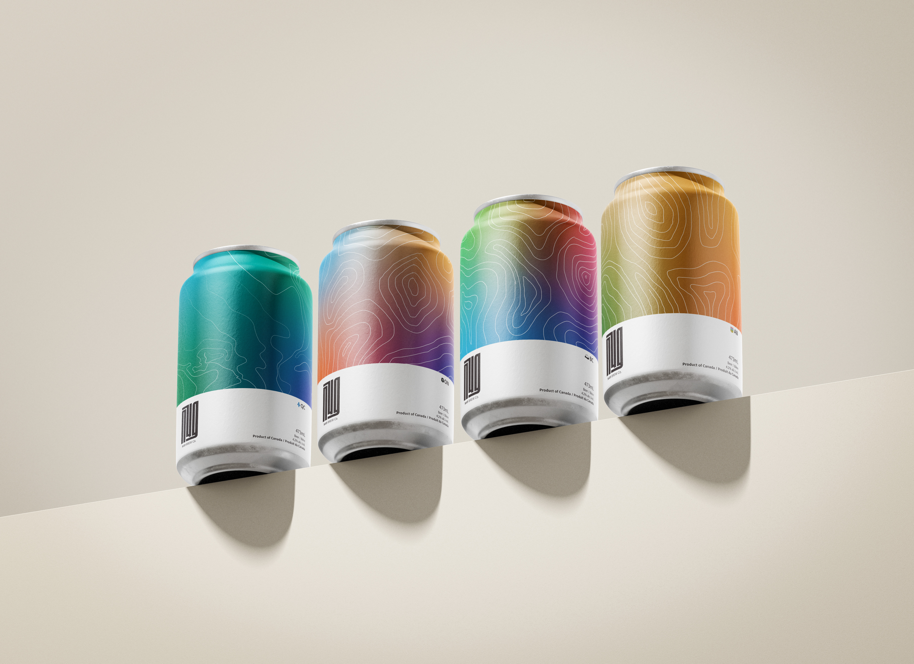
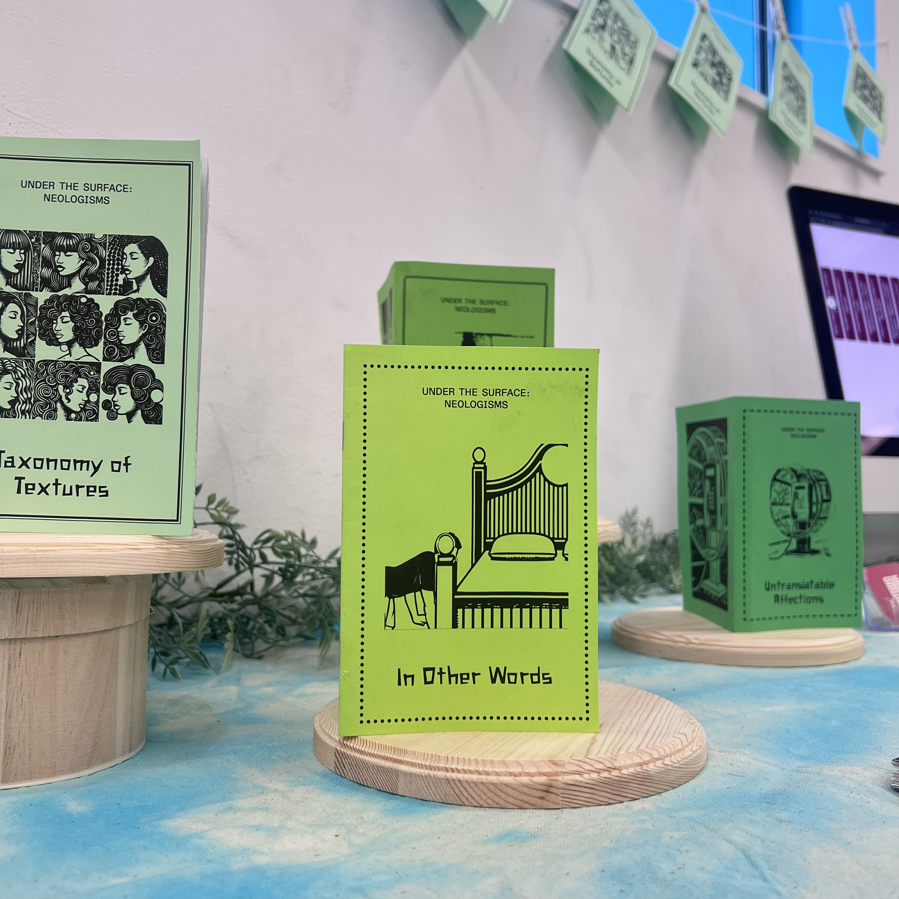
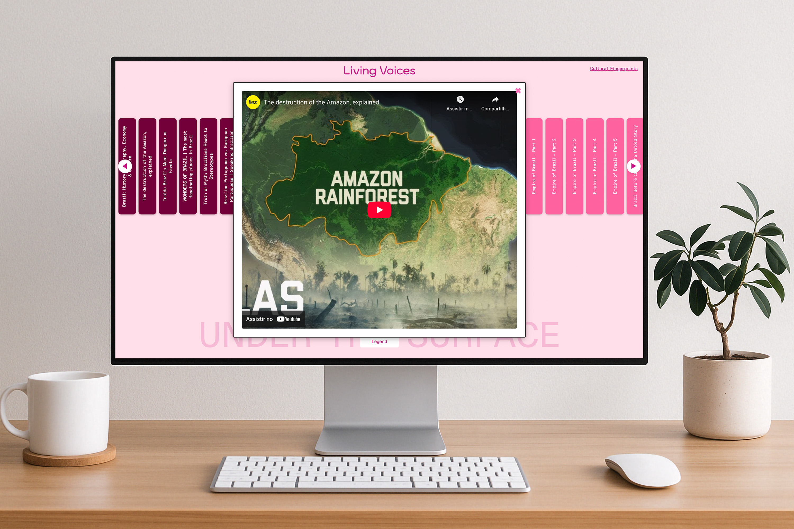
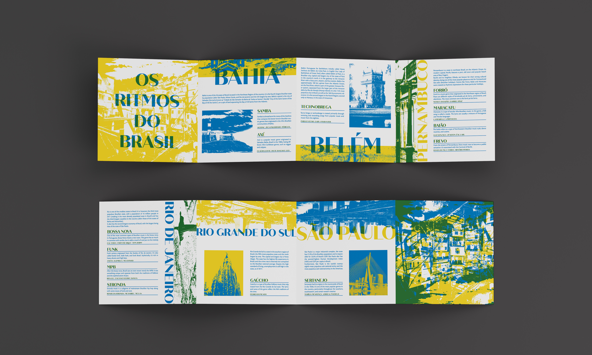
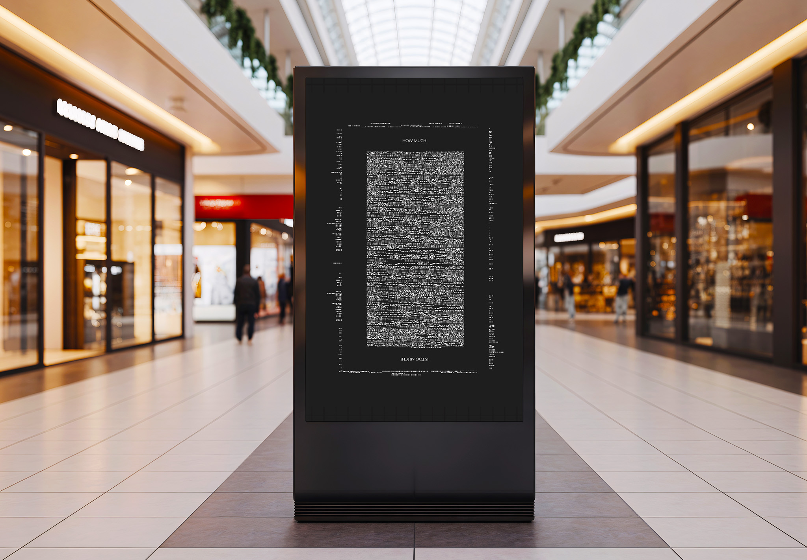

RESUMÉ.
About Me
I’m Esther, a Brazilian, Toronto-based Graphic Designer. I consider myself an interdisciplinary graphic designer because I am adaptable and utilize my background in psychology and digital marketing to create unique and captivating designs. I am dedicated to being a hardworking and organized artist with a strong sense of professionalism, who takes a special interest in typography and accessibility. With my background in psychology, I have been trained and equipped to be detail-oriented, and my experience has refined my practice in this area, making me particularly suited for packaging, branding, and editorial design.
Education
- 2018-2020
- Bachelor in Psychology at the Pernambucan University of Health (FPS), Recife, Brazil;
- 2020-2022
- Bachelor in Digital Marketing at the University of Boa Viagem (FBV), Recife, Brazil;
- 2021-2025
- Bachelor in Graphic Design, OCAD University.
Experience
- 2025-Present
- Self-Employed Graphic Designer
- - Created the branding and stationery for a variety of companies and startups;
- - Problem-solving related to consistency and designs of companies across different social media platforms;
- 2024-2025
- Research Assistant at OCAD University
- - Assisted with the creation of alternative text for a publication on data visualization.
- 2020-2022
- Graphic Design & Digital Marketing Intern at Company Coco do Vale
- - Worked with a digital marketing studio to create content for the company's social;
- - Supervised a year-long process of rebranding which included approving and reviewing over a dozen different packaging designs and colour palettes;
- - Organized data from socials and hosted meetings to improve and adapt produced content.
- 2018-2019
- Art Therapy Intern at the Pernambucan University of Health (FPS)
- - Worked at a children's hospital IMIP, focusing in art therapy;
- - Wrote a children's book about navigating the challenges of growing up chronically ill;
- - Assisted professionals with craft workshops for addicts during a rotation at a rehab center.
Languages
- English
- Portuguese
- Spanish
WORK.

Branding
Poetry Films Inc.

Packaging
Beer, N49

Under the Surface: The Series
Neologisms

Website
Living Voices
Website
Cultural Fingerprints

Branding
Keeper

Website
Os Ritmos do Brasil

Poster